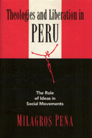

The factors at play in the fate of liberation theology in Peru
The factors at play in the fate of liberation theology in Peru


 The factors at play in the fate of liberation theology in Peru
The factors at play in the fate of liberation theology in Peru

|  |
Theologies and Liberation in PeruThe Role of Ideas in Social MovementsMilagros Pe�acloth EAN: 978-1-56639-294-5 (ISBN: 1-56639-294-2) |
Milagros Pe�a investigates how social protest has become a significant aspect of religious ideology throughout Latin America, particularly with the emergence of liberation theology in Peru. Through extensive research of archived documents, newspapers, and interviews with Catholic theologians of all persuasions, including Father Gustavo Guti�rrez, and other central figures in Peru's social movements, Pe�a assesses the fate of liberation theology, its strengths and weaknesses, and the responses of such conservative Catholic movements as Sodalitium Vitae and Opus Dei, with their theology of reconciliation.
This in-depth analysis coves the various historical periods of religious action and counter-action in Peru: the Church's control over education and cultural institutions; anticlericalism; the Catholic Action movement; the radicalization of the Catholic Church that produced liberation theology and its support of poor people's causes; and the response of the conservative Catholic right, which, with the support of Pope John Paul II, attacked liberation theology as Marxist and as a promoting violence and guerrilla warfare. Theologies and Liberation in Peru shows the significance of ideas in social movement mobilization either for change or for stability, either to guide mass protest or to thwart it.
Preface
1. Liberation and Reconciliation: Clashing Political Interests
2. The Catholic Church in Peru
3. Liberation Theology in Peru
4. Opposition to Liberation Theology
5. The Catholic Right in Peru
Epilogue
Appendix: Persons Interviewed
References
Index
 | Milagros Pe�a is Assistant Professor of Ethnic Studies and Sociology at Bowling Green State University. |
Religion
Latin American/Caribbean Studies
© 2015 Temple University. All Rights Reserved. This page: http://www.temple.edu/tempress/titles/1034_reg.html.